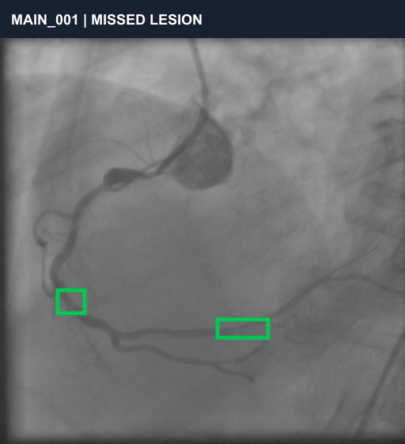
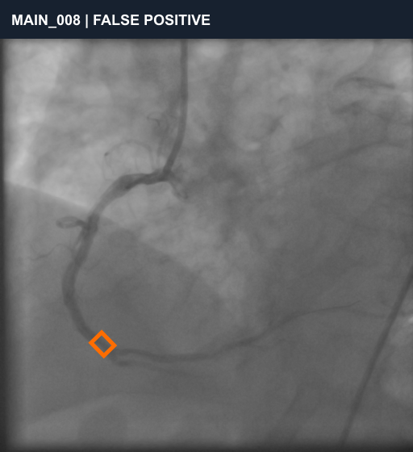
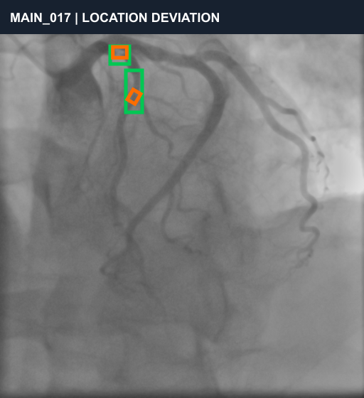

병변 누락
전문가 주석에는 두 곳의 병변이 표시되어 있지만 1차 작업에서는 박스를 생성하지 않은 사례입니다.
관상동맥 조영술 영상 100장을 직접 라벨링하고, 전문가 주석 비교와 블라인드 재검수를 통해 의료영상 데이터의 품질관리 과정을 경험한 프로젝트입니다.
담당: 데이터 선정 · 라벨링 기준 수립 · CVAT 작업 · 품질검수 · 오류 분석
의료영상 데이터 업무에서 요구되는 정확성, 일관된 기준, 검수 기록을 직접 경험하는 것을 목표로 진행했습니다.
공개 데이터셋인 CADICA V5의 비식별화 관상동맥 조영술 정지 프레임을 사용했습니다. 프로젝트 규모를 관리할 수 있도록 10개 그룹에서 총 100장을 선정했습니다.
CVAT의 Rectangle 도구를 사용해 협착 의심 부위를 bounding box로 표시했습니다. 라벨명은 stenosis로 통일하고 병변이 없다고 판단한 영상에는 박스를 만들지 않았습니다.
동일한 판단 기준을 유지하기 위해 작업 전에 기본 원칙을 정했습니다.
| 항목 | 적용 기준 |
|---|---|
| 라벨 대상 | 조영제로 확인되는 관상동맥의 협착 의심 구간 |
| 라벨 형태 | 병변 의심 부위를 포함하는 Rectangle bounding box |
| 비병변 영상 | 병변이 확인되지 않으면 별도의 박스를 생성하지 않음 |
| 불분명한 영상 | 임의로 추측하기보다 정해진 기준 안에서 보수적으로 판단 |
| 일관성 관리 | 박스 범위와 표기 기준을 동일하게 유지하며 순차 작업 |
소규모 연습부터 시작해 본 라벨링과 품질평가, 재검수 순서로 진행했습니다.
전문가 주석을 기준으로 라벨링 결과를 비교하고, 병변 누락·과검출·위치 편차로 오류 유형을 분류하여 이미지별 품질검수표를 작성했습니다.
이후 전체 데이터의 20%인 20장을 파일명 변경 후 블라인드 재검수했으며, 병변 유무 기준 80%의 반복 일치도를 확인했습니다.
전체 결과를 나열하기보다 서로 다른 개선 포인트를 보여주는 대표 사례를 한 장씩 선별했습니다.

전문가 주석에는 두 곳의 병변이 표시되어 있지만 1차 작업에서는 박스를 생성하지 않은 사례입니다.

전문가 주석이 없는 영상에서 혈관 굴곡 부위를 병변으로 판단해 박스를 표시한 사례입니다.

병변이 있는 영상으로 판단했지만 전문가 주석과 박스 위치 및 범위가 충분히 일치하지 않은 사례입니다.